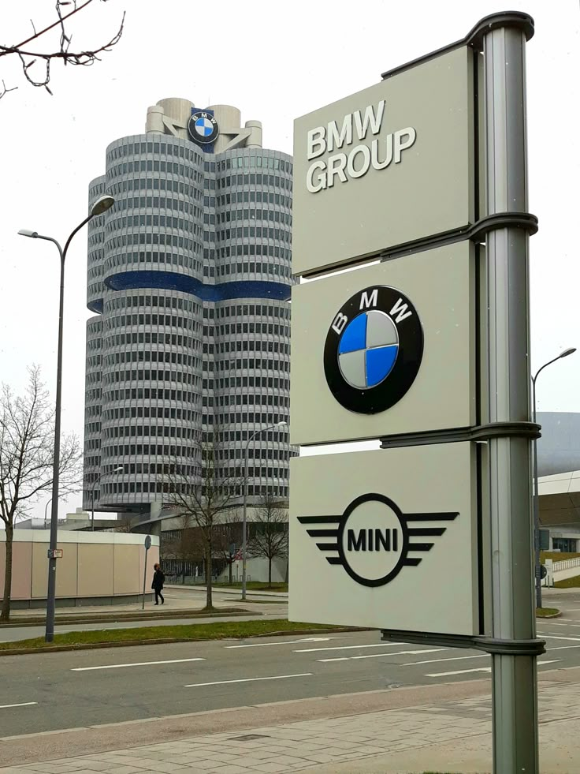

BMW (Bayerische Motoren Werke AG) — 1916-yilda Germaniyada tashkil topgan. U bugungi kunda dunyodagi eng mashhur avtomobil brendlaridan biri sanaladi. BMW mashinalari o'zining sportga xosligi, qulayligi va zamonaviy texnologiyalari bilan mashhur.
Quyida BMW kompaniyasining eng mashhur modellari bilan tanishamiz:
BMW i8 — elektr va benzinli dvigatellarni birlashtirgan sport mashinasi. U ko'rinishi bilan ham, texnologiyasi bilan ham ajoyib...
Dvigatel turi: Gibrid (ichki yonuv dvigateli + elektromotor)
1.5 litrli 3 silindrli turbo benzinli dvigatel
Elektromotor quvvati: ~131 ot kuchi
Umumiy quvvat: 369 ot kuchi (275 kVt)
0-100 km/soat tezlanish: 4.4 soniya
Eng yuqori tezlik: 250 km/soat
Yoqilg'i sarfi: 2.1 L / 100 km
Elektrda yurish masofasi: ~30-40 km
Batareya quvvati: 11.6 kWh litiy-ion
Kuzov materiali: Karbon tolali polimer va alyuminiy
Eshiklar: Vertikal ochiluvchi “kapalak” eshiklar
Aerodinamik shakl, shamol qarshiligi past
Premium salon (2+2 o'rindiqli)
BMW iDrive multimedia tizimi
Xavfsizlik: ABS, ESP, kameralar, avtomatik to'xtash
BMW X5 — oilaviy, qulay va kuchli SUV model. Har qanday yo'lda o'zini yaxshi tutadi.
BMW M4 — bu tez yurishni yoqtiradiganlar uchun sport model. U zo'r dizayn va yuqori tezlikni birlashtiradi.
Yana qo'shimcha ma'lumot kerak bo'lsa shu linkga bosish orqali o'tishingiz mumkin.